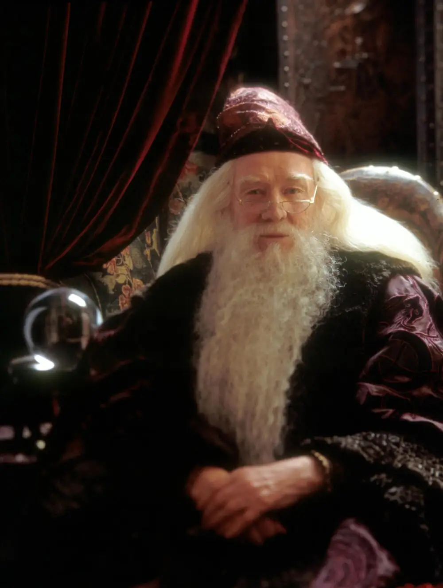
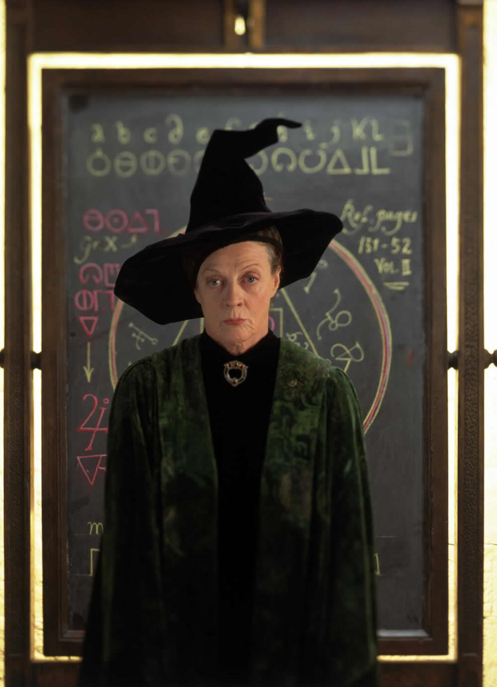
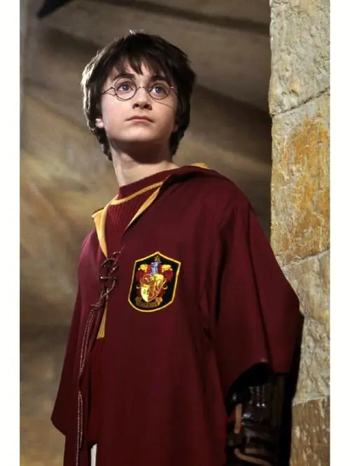
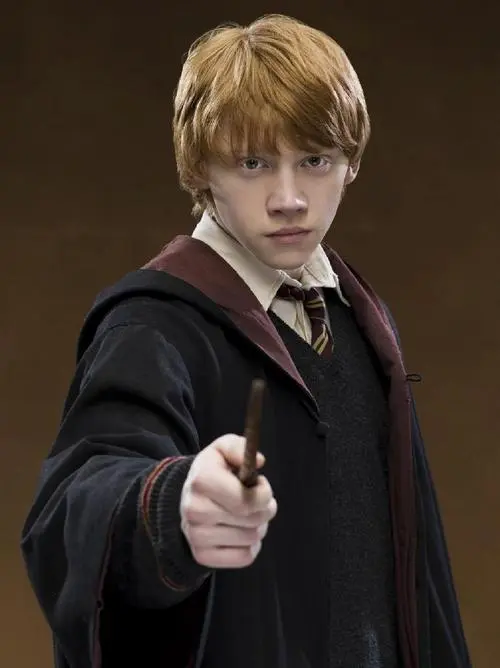

创办人：戈德里克·格兰芬多
创始人遗物：格兰芬多宝剑（由妖精打造，可以排斥灰尘，吸收比它强的物质）；分院帽（里面注入了四大创始人的思想）
代表动物：狮子
代表色：红色、金色
象征元素：火
招生标准：英勇无畏，奋不顾身，大胆无畏，喜爱冒险。
分院帽：你也许属于格兰芬多，那里有埋藏在心底的勇敢，他们的胆识、气魄和豪爽，使格兰芬多出类拔萃。
常驻幽灵：差点没头的尼克（尼古拉斯·德·敏西-波平顿爵士）
公共休息室：位于格兰芬多塔8楼入口画像墙洞后，为一个舒适的圆形房间，摆满了软绵绵的扶手椅，有两条螺旋梯各通往男、女生宿舍。
代表人物：
| 阿不思·邓布利多 | 米勒娃·麦格 | 哈利·波特 | 罗恩·韦斯莱 | |
|  |  |  |  |